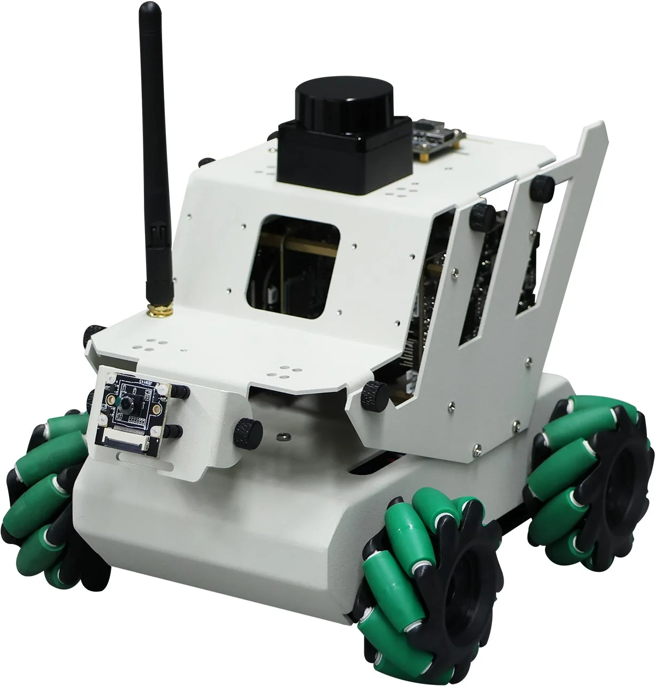

The initial robot
I started my project from Yahboom's
RDK X3 Robot
(the version without the depth camera), which is already a fully functioning robot (you have to assemble it however) with a lot of capabilities.

I didn't have a clear idea of what I wanted to do, but if you plan to copy this project it may be cheaper to
only buy the parts that are still in the final robot.
The robot has 4 mechanum wheels, which give it the ability to move in any direction. For sensors, it has a
camera, a lidar, and other internal sensors that I still have not experimented with, like IMU. It has a
buzzer that can emit a beeping sound, and a small OLED screen that displays information about the robot.
it also comes with a remote PS2-like controller, which is used to control the robot.
The robot has already many sophisticated capabilities, such as SLAM (Simultaneous Localization and
Mapping), which allows it to map its environment and navigate autonomously. It can also follow a line, avoid
obstacles, and recognize objects. Most of them are implemented as ROS packages, which is a framework for
building robot applications.
The
official documentation
linked above enters into the details of all the hardware and software if you are interested.
To access the robot OS from a computer there are several ways, but what I found more convenient is with
RealVNC viewer, which is a remote desktop application. Note however that the robot has to already be connected
to a Wi-Fi network. To do this I connected a screen, a mouse and a keyboard directly to the robot via cable,
and then I configured the Wi-Fi network from the desktop environment. When connecting cables to the robot
make sure the wheels are not touching the ground, so accidental movements won't cause damage.
I had some issues with the robot, which I will list here so you will be prepared in advance.
- The smartphone apps provided by Yahboom didn't work in my case (the robot should be controllable by phone).
- I had trouble with the advanced capabilities, in part because my pc has Windows, so I had to use
a virtual machine with Ubuntu to run ROS. But even then, sometimes they didn't work as expected.
Software changes
I started by changing small bits of code while I was trying to understand how the robot worked. For example, I
added the control of the internal lights to the ps2 controller, and changed some of the information
displayed on the oled screen.